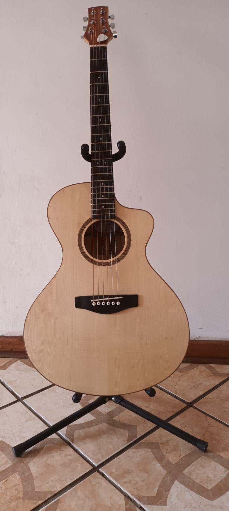
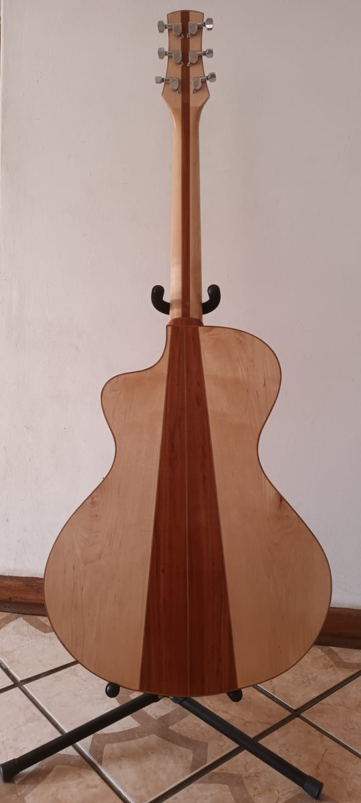
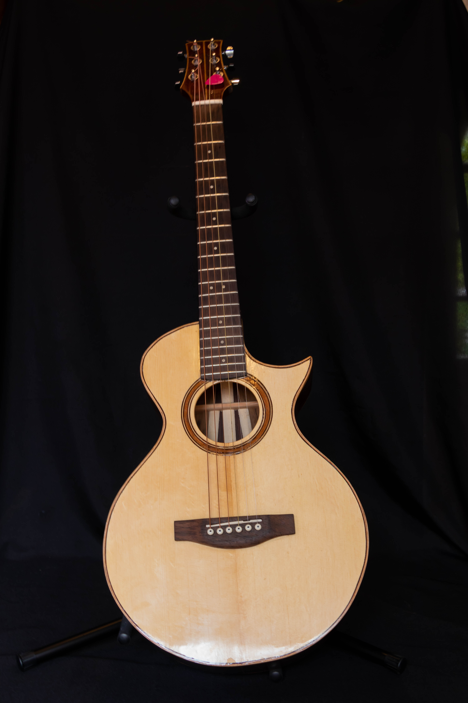
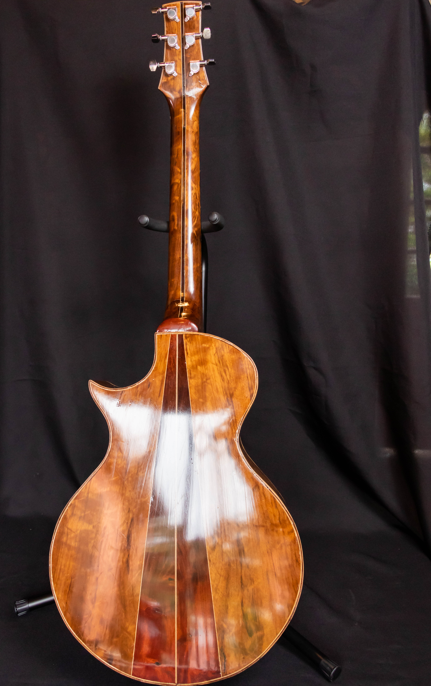

Model C503 – Curved Grand Auditorium Acoustic
The Model C503 is a refined interpretation of the classic Grand Auditorium...
- Soundboard – European Spruce
- Body – Maple and Zimbabwean teak
- Neck - Maple and Zimbabwean teak
- Fretboard – Ebony
- Bridge – Ebony
- Scale length – 645mm
- Includes a passive pickup system


Model C460 – Compact Concert Acoustic
A slim-waisted, small-bodied steel-string guitar...
- Soundboard – Sitka Spruce
- Body – Imbuia and Zimbabwean teak
- Neck - Imbuia and Zimbabwean teak
- Fretboard – Wenge
- Bridge – Wenge
- Scale length – 635mm
- Nut – 44mm


Model C473 – Concert Classical Guitar
The Model C473 is a carefully crafted classical guitar...
- Body length: 473 mm
- Upper bout: 277 mm
- Waist: ~230–240 mm
- Lower bout: ~360–370 mm
- Depth: Upper bout ~95 mm, lower bout ~100–105 mm
- Scale length: 650 mm
- Nut width: 52 mm
- Bracing: 7-fan asymmetrical
- Includes a passive pickup system